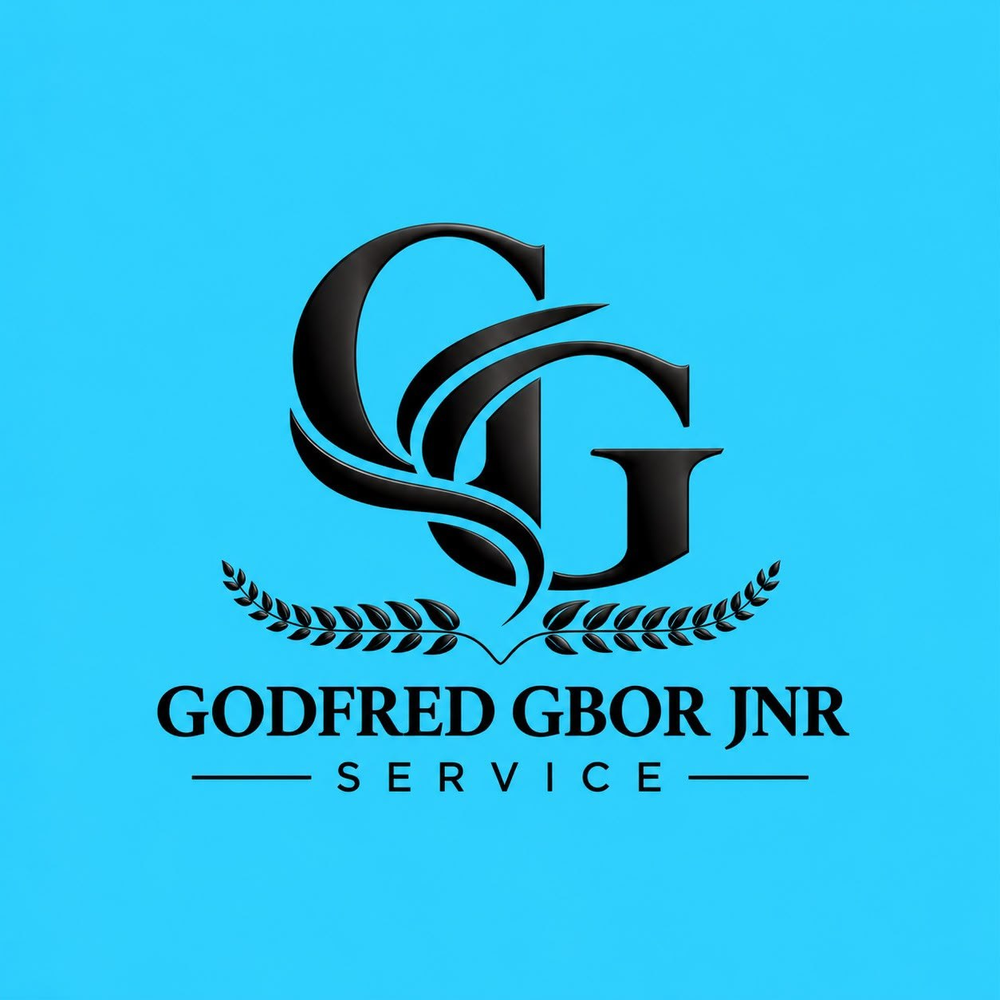
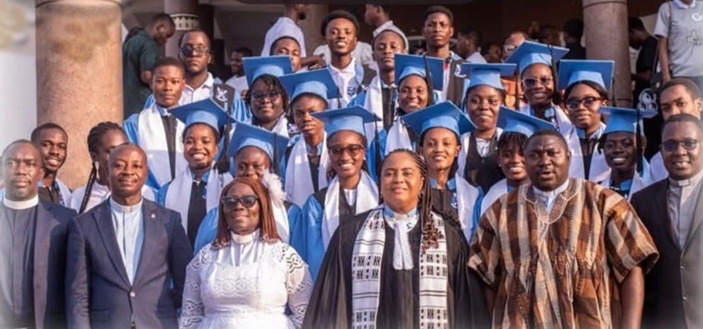
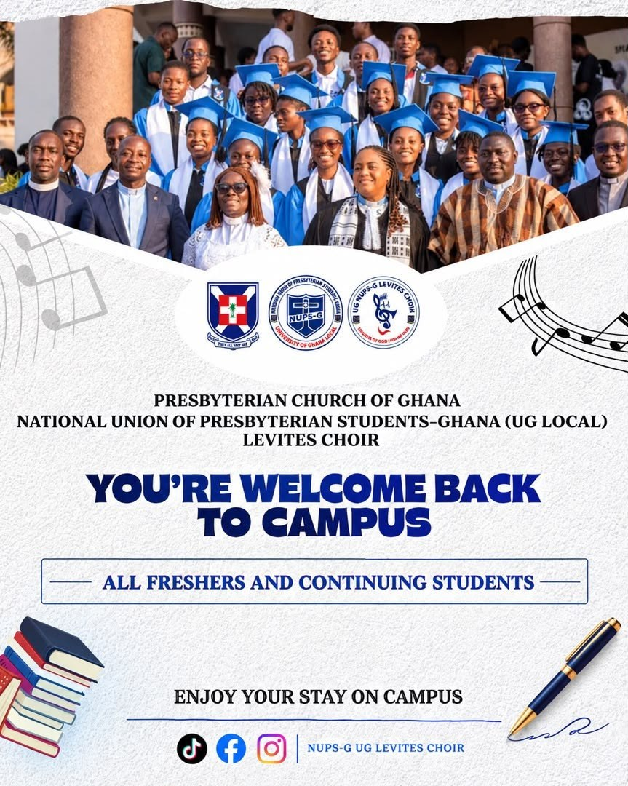
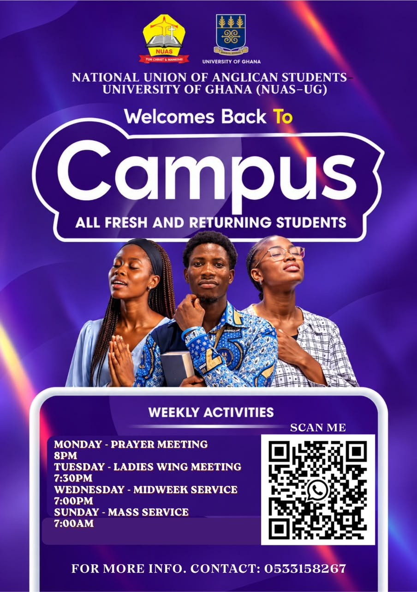
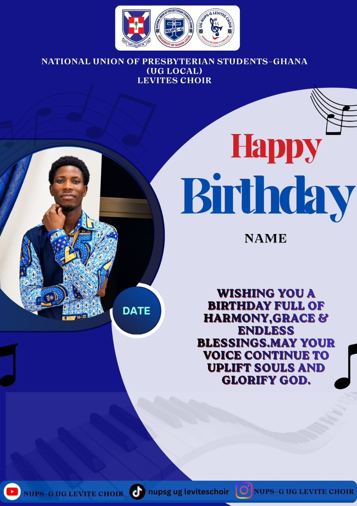
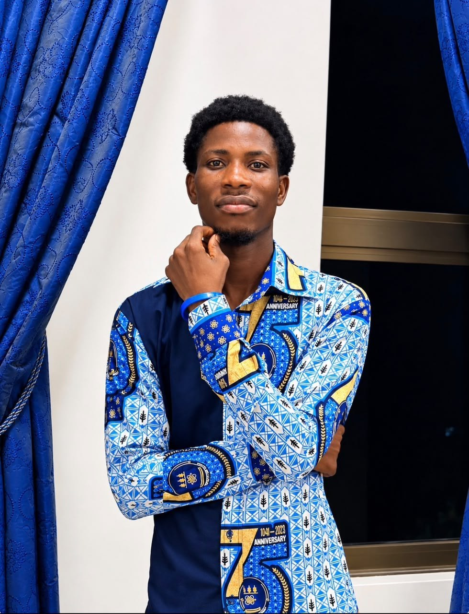
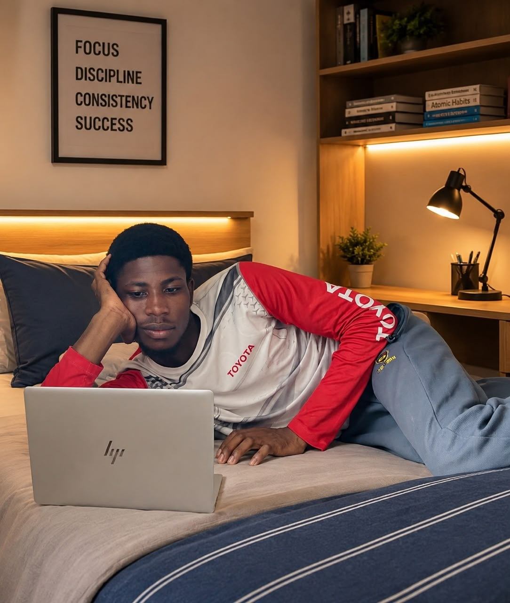

FOUNDATIONS
Presbyterian Basic & Junior High School
Built an early foundation in learning and service, serving as School Chaplain and Scripture Union President during my school years.

GODFRED GBOR JUNIORPERSONAL PORTFOLIOGHANAIAN • UNIVERSITY OF GHANA
A student of technology, a servant leader, and a creative committed to learning, faith and meaningful impact.
I am Godfred Gbor Junior, a Ghanaian undergraduate at the University of Ghana, pursuing a Bachelor of Science in Information Technology.
My journey brings together technology, service, leadership and creativity. From taking up responsibilities in school and church to serving in student organisations at university, I have learned the value of teamwork, preparation and showing up for others.
I am proud of my Ghanaian roots, with family heritage connected to Yeji in the Bono East Region and the Volta area. I speak Ewe, English and Akan, and my Presbyterian faith remains an important part of my life.
A path shaped by education, unexpected turns, new opportunities and a willingness to learn.
Built an early foundation in learning and service, serving as School Chaplain and Scripture Union President during my school years.
Completed the General Science programme at Yeji Senior High Technical School. I served in student leadership, including as General Secretary of the Science Students’ Association.
After senior high school, I gained practical experience helping manage a bookshop with my brother. My university application journey took an unexpected turn, eventually leading me to Information Technology—a field I came to enjoy and embrace.
Continuing my academic journey while building skills in technology, research, communication and creative work.
Experiences that have taught me responsibility, collaboration, communication and commitment.
Served as a floor representative and contributed to hall activities. I was selected to serve on the committee that researched, reviewed and drafted the hall’s constitution, which went through supervisory and university approval processes.
STUDENT LEADERSHIPServed as Music Director, supporting the choir’s musical work and ministry. I also serve as a chorister and chaplain within my Presbyterian church community.
CHURCH & MUSIC MINISTRYServed as Assistant Organising Secretary, contributing to the organisation and coordination of choir activities.
TEAMWORK & ORGANISATIONPast responsibilities include School Chaplain, Scripture Union President, Science Students’ Association General Secretary and Junior Youth President. I currently serve as Chaplain for the choir at Trinity Congregation, Yeji.
EARLY SERVICE & FAITHReceived certificates of appreciation connected to volunteer support for a university ministry programme, from the SRC and the ministry team.

A COMMUNITY OF SERVICE, MUSIC & FRIENDSHIPI enjoy combining practical digital skills with communication, organisation and creative problem-solving.
Technology · Graphic design · Choral music · Faith · Leadership · Community development · Lifelong learning
A selection of visual projects and design materials connected to campus and choir activities, alongside personal branding.




“Small steps. Consistent growth. Meaningful impact.”
A PERSONAL GUIDING PRINCIPLE
For professional, academic, creative or collaborative enquiries, you can reach out by email.
Send an email ↗